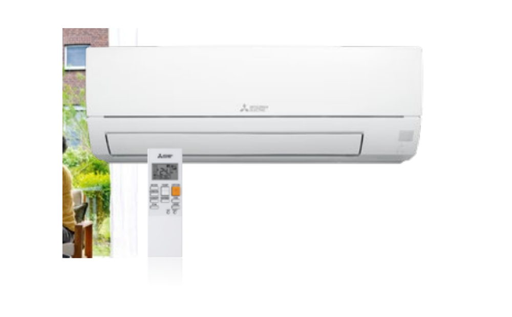

Mitsubishi Electric
MSZ-HR35VF + MUZ-HR35VF
Auf Lager / kurzfristig verfügbar
für mittelgroße Räume und höheren Kühlbedarf. Set aus Innen- und Außengerät zum Kühlen und Heizen.
- Kühlen und Heizen
- 3,4 kW Nenn-Kühlleistung
- Inverter-Technologie
- R32-Kältemittel
Kühlen A++Heizen A+R32
879 €
inkl. 19 % MwSt. · zzgl. 59 € Versand · ohne Montage